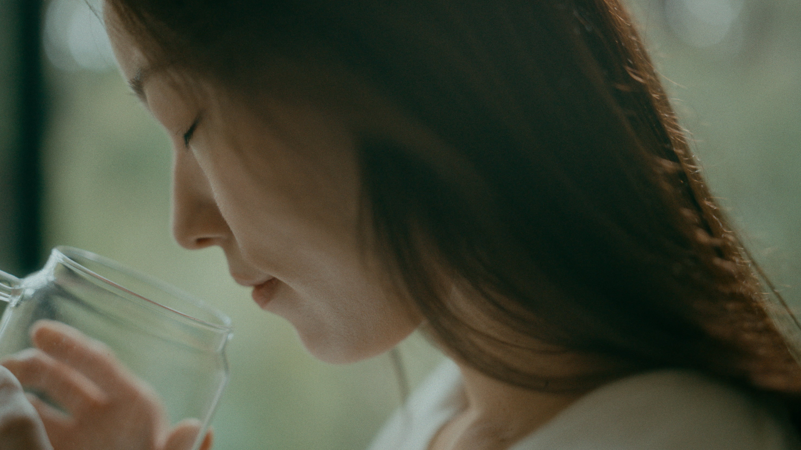
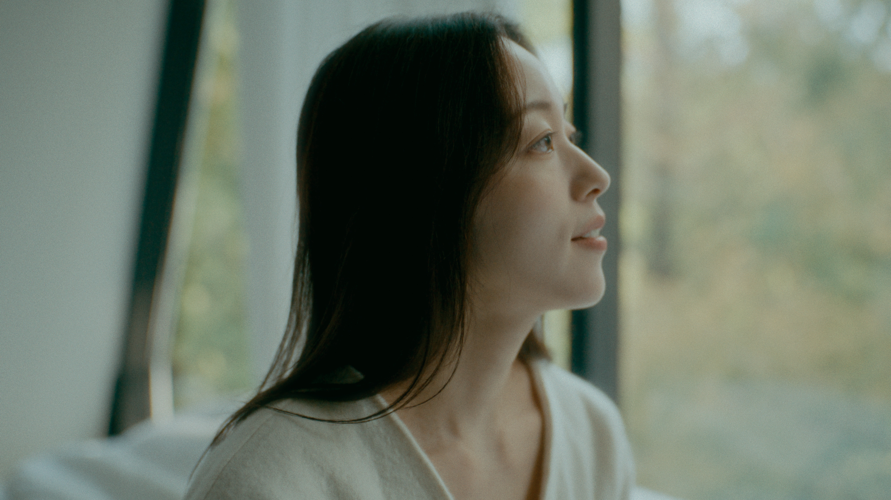
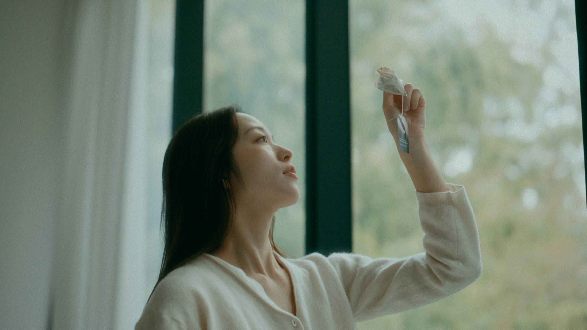
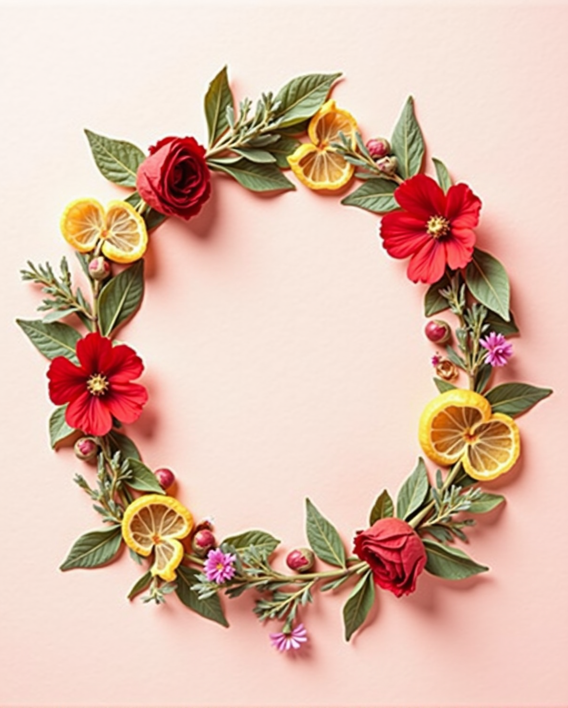
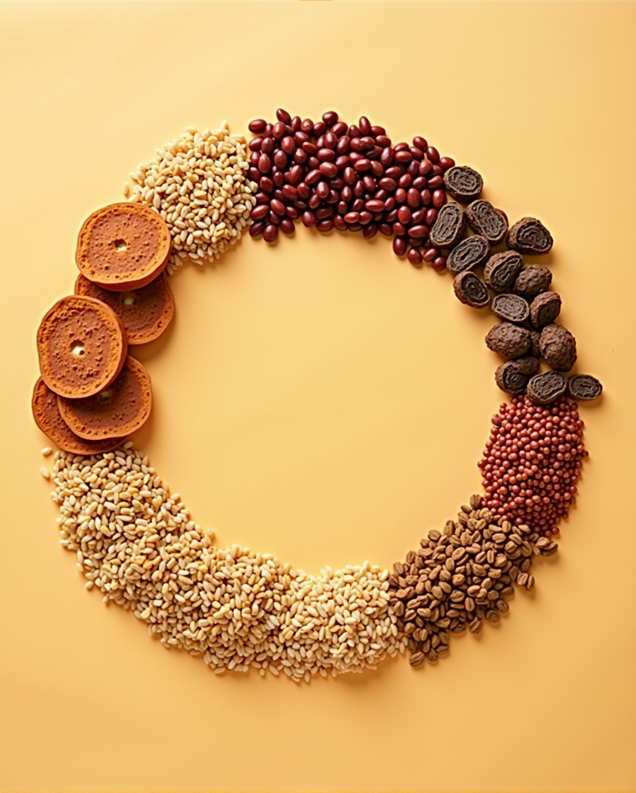
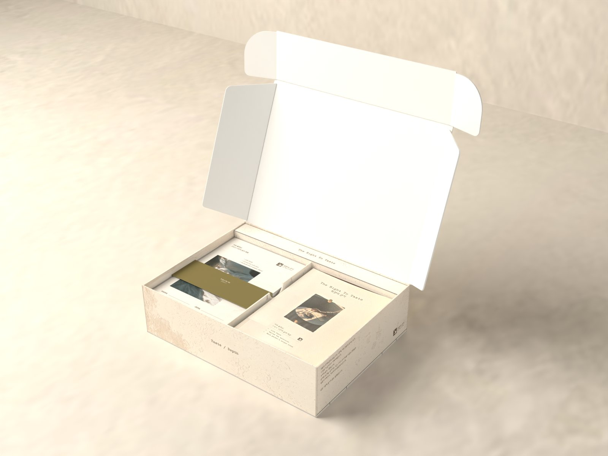

BRAND STORY
취향은 정해지는 것이 아니라 완성되어 갑니다.
우리는 완성된 맛을 건네지 않습니다. 당신이 자신의 맛을 완성할 수 있도록 원료와 시간을 건넵니다.
어떤 날에는 꽃처럼 향긋하게, 어떤 날에는 커피처럼 깊게. 오늘의 취향은 어제와 달라도 괜찮습니다.


Life is an endless blending.
본 펀딩 리워드 구매 시, 스테인리스 인퓨저 100% 증정
울트라 얼리버드 선착순 100명에게는 원료 3팩까지 함께 드립니다.

티백을 뜯을 때마다 매번 같은 맛이라
지겨웠던 적
블렌딩 카페는 좋았지만
매번 시간 내서 찾아가긴 어려웠던 적

선물로 차를 고르다가
결국 무난한 걸로 타협했던 적
이제는 ‘나’의 취향을 찾을 때.
나를 위한 작은 습관, 취향의 권리
대한명인회 · 이소연
차·식음료 상품개발과 수출 20년
『11시와 4시 나는 차를 마신다』
『Life in My Teacup』
엘카페 · 양진호
곡물과 뿌리 원료의 로스팅 설계
VER.2 GRAIN 레시피 시음

전문가에게는 원칙을,
소비자에게는 취향의 권리를.

화사한 꽃·과일·허브 향의 블렌딩. 레몬밤·히비스커스·페퍼민트·유자·장미·캐모마일

구수함과 로스팅의 깊이. 둥굴레·찰수수·단팥·현미·민들레 뿌리·보리

깊이는 로스트로, 취향은 향으로. VER.1 + VER.2 원료 12종과 교차 레시피 가이드
 1
2
3
4
5
1
2
3
4
5
뚜껑이 뒤로 열리는 상자. 겉은 아이보리 미장, 속은 흰색.
펼치면 원료 파우치 면과 아치형 엽서 창 면이 번갈아 나오는 하드커버 병풍책.
HERB · GRAIN 구분
비율과 그날의 한 잔을 적어 두는 소프트커버 노트.
책과 노트를 두 칸으로 나눕니다.

5점 기준 · 연구팀 시음 프로필

레몬과 풋잎을 떠올리게 하는 산뜻함. 첫 향을 밝게 엽니다.

붉은 과일을 연상시키는 선명한 산미. 수색을 바꿉니다.

차갑고 깨끗한 상쾌함. 소량부터.

밝은 감귤 껍질 향과 은은한 쌉싸름함.

우아하고 풍성한 꽃향. 긴 아로마.

사과와 꿀을 연상시키는 부드러운 향.

5점 기준 · 연구팀 시음 프로필

부드러운 볶은 뿌리와 은은한 단맛. 바디감을 둥글게.

담백하고 순한 곡물의 구수함. 뿌리 원료를 받쳐 줍니다.

볶은 팥의 고소하고 부드러운 여운.

볶은 쌀의 담백하고 고소한 향. 바디를 받쳐 줍니다.

흙·나무·커피·카카오를 연상시키는 깊은 볶음 향. 중심 원료.

익숙하고 선명한 볶은 곡물 향.
5점 기준 · 교차 레시피 평균 프로필
유자 + 민들레 뿌리 + 단팥 — 밝은 첫 향 뒤에 깊은 볶음 향과 부드러운 고소함.
장미 + 캐모마일 + 보리 — 우아한 꽃향과 맑은 곡물의 여운.
페퍼민트 + 레몬밤 + 보리 — 상쾌하게 시작해 구수하고 깔끔하게.
장미 + 단팥 + 둥굴레 — 장미의 우아함, 단팥의 고소함, 둥굴레의 바디감.
히비스커스 + 유자 + 찰수수 — 선명한 산미와 따뜻한 곡물의 여운이 대비를 이룹니다.
12가지 원료로 향과 바디감을 따로 조절하고, 블렌딩 노트에 비율을 남깁니다.
말린 허브와 볶은 곡물·뿌리를 그대로 담았습니다.
카페인 표시는 펀딩 오픈 시 함께 안내드립니다.
가이드에 담긴 21가지 레시피 중 세 가지.
비율을 따라 만들다 보면 바꾸고 싶은 자리가 보입니다.
아코디언북을 펼치면 원료 여섯 가지가 한 줄로 놓입니다. 비율을 정하기 전, 나란히 두고 살펴보세요.
캐모마일 2 : 장미 1 : 레몬밤 1
95~100°C · 150ml · 3~5분꽃향을 중심에 두고 레몬밤으로 첫 향을 살짝 밝힙니다. 은은하게 오래 머무는 한 잔.
유자 1 : 민들레 뿌리 2 : 단팥 1
100°C · 150ml · 7~10분유자의 밝은 첫 향 뒤에 깊은 볶음 향과 부드러운 고소함이 이어지는 시트러스 로스트.
민들레 뿌리 2 : 단팥 2 : 찰수수 1 : 둥굴레 ½
100°C · 150ml · 10분 이상깊게 볶은 듯한 첫 향에 단팥과 찰수수의 부드러운 구수함이 이어집니다.
취향에 따라 즐겨보세요
한 장씩 넘기며 오늘 쓸 원료 파우치를 고릅니다.
파우치에서 원료를 덜어 원하는 비율로 섞습니다.
파우치 옆 엽서 뒷면에서 우리는 시간을 확인하고 아래처럼 우립니다.
95~100°C 물 150ml에 원료를 넣고 3~5분. 로스트 계열은 7~10분 이상 길게.
같은 비율로 진하게 우린 뒤, 얼음을 가득 채운 잔에 바로 부어 식힙니다.
찬물 300ml에 원료를 넣고 냉장고에서 6시간 이상. 맑고 부드럽게.
「나의 취향찾기」에 답하면 전문가 레시피 21가지 중
지금 나에게 맞는 한 잔과, 그 레시피에 필요한 키트를 알려 드려요.
은은한 꽃향과 부드러운 여운 — 장미 · 캐모마일 · 레몬밤
밝은 향, 선명한 산미, 상쾌한 여운 — 유자 · 히비스커스 · 페퍼민트
볶은 향과 묵직한 바디감, 깊게 이어지는 여운 — 민들레 뿌리 · 둥굴레 · 단팥
첫 향은 과일·꽃으로, 여운은 로스트로 — 유자 · 장미 · 민들레 뿌리 · 단팥
30초 만에 나의 취향 찾기

취향의권리.com결과로 나온 레시피는 키트 안 재료로
바로 만들어 볼 수 있어요.
오픈 전 체험단 20명이 VER.1 HERB로 만든 첫 잔과 그날의 비율을 이 자리에 싣습니다.

오픈 전 체험단 20명이 VER.2 GRAIN으로 만든 첫 잔과 그날의 비율을 이 자리에 싣습니다.

오픈 전 체험단 20명이 TWO KIT SET으로 만든 첫 교차 블렌드를 이 자리에 싣습니다.

블렌딩 노트에는 그날의 비율과 첫 잔의 인상을 한 줄씩 남깁니다.
취향은 정해지는 것이 아니라 완성되어 갑니다.
우리는 완성된 맛을 건네지 않습니다. 당신이 자신의 맛을 완성할 수 있도록 원료와 시간을 건넵니다.
어떤 날에는 꽃처럼 향긋하게, 어떤 날에는 커피처럼 깊게. 오늘의 취향은 어제와 달라도 괜찮습니다.


Life is an endless blending.
| 제품명 | 취향의 권리 티 블렌딩 키트 VER.1 HERB |
|---|---|
| 식품의 유형 | 펀딩 오픈 시 표기 |
| 원재료명 | 레몬밤, 히비스커스, 페퍼민트, 유자, 장미, 캐모마일 |
| 내용량 | 펀딩 오픈 시 표기 |
| 보관방법 | 펀딩 오픈 시 표기 |
| 소비기한 | 펀딩 오픈 시 표기 |
| 제조원·판매원 | 펀딩 오픈 시 표기 |
| 고객 문의 | 펀딩 오픈 시 표기 |
| 제품명 | 취향의 권리 티 블렌딩 키트 VER.2 GRAIN |
|---|---|
| 식품의 유형 | 펀딩 오픈 시 표기 |
| 원재료명 | 둥굴레, 찰수수, 단팥, 현미, 민들레 뿌리, 보리 |
| 내용량 | 펀딩 오픈 시 표기 |
| 보관방법 | 펀딩 오픈 시 표기 |
| 소비기한 | 펀딩 오픈 시 표기 |
| 제조원·판매원 | 펀딩 오픈 시 표기 |
| 고객 문의 | 펀딩 오픈 시 표기 |
| 제품명 | 취향의 권리 티 블렌딩 키트 TWO KIT SET (VER.1 + VER.2) |
|---|---|
| 식품의 유형 | 펀딩 오픈 시 표기 |
| 원재료명 | 레몬밤, 히비스커스, 페퍼민트, 유자, 장미, 캐모마일, 둥굴레, 찰수수, 단팥, 현미, 민들레 뿌리, 보리 |
| 내용량 | 펀딩 오픈 시 표기 |
| 보관방법 | 펀딩 오픈 시 표기 |
| 소비기한 | 펀딩 오픈 시 표기 |
| 제조원·판매원 | 펀딩 오픈 시 표기 |
| 고객 문의 | 펀딩 오픈 시 표기 |
지금 시작하면, 가장 좋은 조건으로.



뚜껑을 닫으면, 그대로 선물
책과 노트를 두 칸에 나란히 담은 채 닫히는 상자.
받는 사람이 처음 여는 순간까지 그대로 건넵니다.
모든 리워드 공통 구성: 티 블렌딩 키트 1개 · 실물 블렌딩 노트 1권
HERB와 GRAIN을 함께 담으면 두 가지 취향을 모두 경험하고, 단팥차 샘플도 함께 받습니다.
레시피를 공유해 주신 분 중 추첨으로 10명에게
취향의 권리 키트를 만드는 티 브랜드,
티아포테카의 차 4종(10만 원 상당)을 선물합니다.

키트로 나만의 블렌딩 레시피를 완성해요.
블렌딩 노트 사진과 레시피로 후기를 써 주세요.
@right.totaste 팔로우 후 같은 사진을 올리고 태그해 주세요.
#취향의권리 #나만의블렌딩 #이벤트참여
댓글에 와디즈 서포터 닉네임을 남겨 주세요.
당신의 한 잔이
또 다른 누군가의 취향에 영감이 됩니다.
What do you like to taste?
당신은 어떤 맛을
좋아하는 사람인가요?